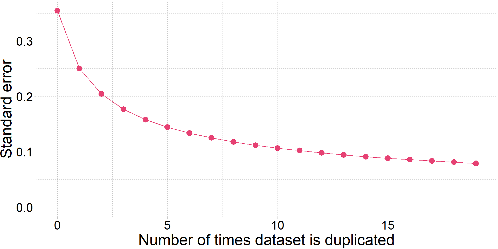
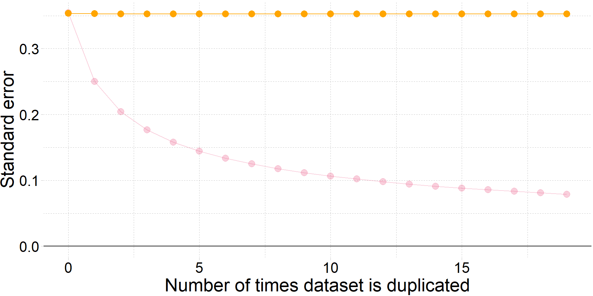

Питання 2: Ми витрачаємо багато часу на обговорення \(u_i^2\). Чому?
Відповідь 2:
Одним із основних припущень є те, що наші збурення (\(u_i\)) є гомоскедастичними (вони мають постійну дисперсію), тобто, \(\mathop{\text{Var}} \left(u_i \middle| x_i \right) = \sigma^2\).
Ми також припускаємо, що середнє значення цих збурень дорівнює нулю, \(\color{#e64173}{\mathop{\boldsymbol{E}}\left[ u_i \middle| x_i \right] = 0}\).
Таким чином, якщо ми хочемо дізнатися про дисперсію \(u_i\), ми можемо зосередитися на \(u_i^2\).
Огляд
Питання 3: Ми також витрачаємо багато часу на обговорення \(e_i^2\). Чому?
Відповідь 3:
Ми не можемо спостерігати \(u_i\) (або \(u_i^2\)).
Але \(u_i^2\) говорить нам про дисперсію \(u_i\).
Ми використовуємо \(e_i^2\), щоб дізнатися про \(u_i^2\) і, в результаті \(\sigma_i^2\).
Огляд: поточні припущення
Наша вибірка (\(x_k\) та \(y_i\)) була випадковим чином відібрана з сукупності.
\(y\) є лінійною функцією\(\beta_k\) і \(u_i\).
У нашій вибірці немає ідеальної мультиколінеарності.
Пояснювальні змінні є екзогенними: \(\mathop{\boldsymbol{E}}\left[ u \middle| X \right] = 0 \left(\implies \mathop{\boldsymbol{E}}\left[ u \right] = 0\right)\).
Збурення мають постійну дисперсію\(\sigma^2\) і нульова коваріація, тобто,
Як і раніше, ми трансформуємо нашу гетероскедастичну модель у гомоскедастичну модель. Цього разу ми ділимо дані кожного спостереження1 на \(\sqrt{h(x_i)}\).
\(R_e^2\approx0.029\) і тестова статистика \(\widehat{\text{LM}} = n\times R_e^2 \approx 12.2\).
H0\(\text{LM}\) розподілена як \(\chi_5^2\)\(\implies\)p-value \(\approx\) 0.033.
∴ Відхиляємо H0Висновок: Існують статистично значущі докази гетероскедастичності на п’ятивідсотковому рівні.
Приклад: Специфікація моделі
Гаразд, ми спробували скорегувати нашу специфікацію, але все ще є докази гетероскедастичності.
Далі: Загалом, ви звернетеся до стійких до гетероскедастичності стандартних помилок.
OLS все ще неупереджений для коефіцієнтів (\(\beta_j\)’)
Стійкі до гетероскедастичності стандартні помилки є незміщеними для стандартних помилок\(\hat{\beta}_j\), тобто, \(\sqrt{\mathop{\text{Var}} \left( \hat{\beta}_j \right)}\).
Приклад: Het.-robust standard errors
Приклад: Het.-robust standard errors
Повертаємось до моделі
\[ \text{Score}_i = \beta_0 + \beta_1 \text{Ratio}_i + \beta_2 \text{Income}_i + u_i \] Ми можемо використовувати пакет fixest у R для обчислення стандартних помилок.
1. Запустіть регресію за допомогою feols() (замість lm())
# Load 'fixest' packagep_load(fixest)
package 'dreamerr' successfully unpacked and MD5 sums checked
package 'stringmagic' successfully unpacked and MD5 sums checked
package 'fixest' successfully unpacked and MD5 sums checked
The downloaded binary packages are in
C:\Users\ihorm\AppData\Local\Temp\RtmpOmveCh\downloaded_packages
# Regress log score on ratio and log incometest_reg <-feols(test_score ~ ratio + income, data = test_df)
Зверніть увагу, що feols() використовує той самий синтаксис, що і lm() для цієї регресії.
Приклад: Het.-robust standard errors
\[ \text{Score}_i = \beta_0 + \beta_1 \text{Ratio}_i + \beta_2 \text{Income}_i + u_i \] 2. Оцініть het.-robust standard errors за допомогою опції vcov = 'hetero' в summary()
# Het-robust standard errors with 'vcov = 'hetero''summary(test_reg, vcov ='hetero')
Estimate Std. Error t value Pr(>|t|)
(Intercept) 638.729155 7.301234 87.48235 < 2.2e-16 ***
ratio -0.648740 0.353340 -1.83602 0.067066 .
income 1.839112 0.114733 16.02949 < 2.2e-16 ***
Приклад: Het.-robust standard errors
Коефіцієнти та гетероскедастично-робасті стандартні помилки:
summary(test_reg, vcov ='hetero')
Estimate Std. Error t value Pr(>|t|)
(Intercept) 638.729155 7.301234 87.48235 < 2.2e-16 ***
ratio -0.648740 0.353340 -1.83602 0.067066 .
income 1.839112 0.114733 16.02949 < 2.2e-16 ***
Коефіцієнти та прості стандартні помилки OLS (припускається гомоскедастичність):
summary(test_reg, vcov ='iid')
Estimate Std. Error t value Pr(>|t|)
(Intercept) 638.729155 7.449077 85.74608 < 2.2e-16 ***
ratio -0.648740 0.354405 -1.83051 0.067888 .
income 1.839112 0.092787 19.82083 < 2.2e-16 ***
Приклад: WLS
Приклад: WLS
Ми згадували, що WLS часто неможливий — нам потрібно знати функціональну форму гетероскедастичності — або
A. \(\sigma_i^2\)
або
B. \(h(x_i)\), де \(\sigma_i^2 = \sigma^2 h(x_i)\)
Є випадки, коли ми можемо знати \(h(x_i)\).
Приклад: WLS
Уявіть, що окремі особи в популяції мають гомоскедастичні розлади.
Однак замість того, щоб спостерігати за індивідуальними даними, ми спостерігаємо (у даних) середні значення для груп (наприклад, міст, округів, шкільних округів).
Якщо ці групи мають різні розміри, тоді наш набір даних буде гетероскедастичним — передбачуваним способом.
Нагадуємо: Дисперсія вибіркового середнього залежить від розміру вибірки, \[ \mathop{\text{Var}} \left( \overline{x} \right) = \dfrac{\sigma_x^2}{n} \]
Приклад: Наші дані шкільного тестування усереднені на рівні школи.
Приклад: WLS
Приклад: Наші дані шкільного тестування усереднені на рівні школи.
Навіть якщо окремі учні мають гомоскедастичні порушення, у школах будуть гетероскедастичні порушення, тобто,
Ігнорування цієї кореляції може спричинити великі проблеми у вашому висновку.
Інтуїція
Чому ігнорування такої кореляції призводить до проблем?
Помилкова точність: ми можемо стати «надто впевненими» у своїх знаннях.
Екстремальний приклад: якщо дублювати свій набір даних (складати його поверх самого себе), звичайні стандартні помилки OLS зменшуватимуться кожного разу, коли ви дублюватимете набір даних.
Вплив дублювання наших даних на стандартна помилки МНК параметра ratio.

Виправляємо наші стандартні помилки (кореляція спостережень).

Приклади
«Реальні» приклади, коли збурення можуть корелювати:
Учні в класі (діляться вчителем, навчальним планом тощо)
Підприємства в місті
Послідовні дні у вибірці (поділіться подіями, погодою тощо)
Рішення
Подібно до того, як ми обчислюємо heteroskedasticity-robust standard errors, ми також можемо розрахувати стандартні помилки, стійкі до корельованих збурень.
Люди називають це cluster-robust standard errors (або просто clustered).
З пакета fixest:
feols(y ~ x, дані = fake_data, cluster = 'cluster_var')
або навіть
feols(y ~ x, дані = fake_data, cluster = c('cluster1', 'cluster2'))
Кращий висновок
Ви повинні за замовчуванням вважати, що ваші дані гетероскедастичні
Подумайте про те, як ваші пояснювальні змінні та/або порушення корелюють між спостереженнями.